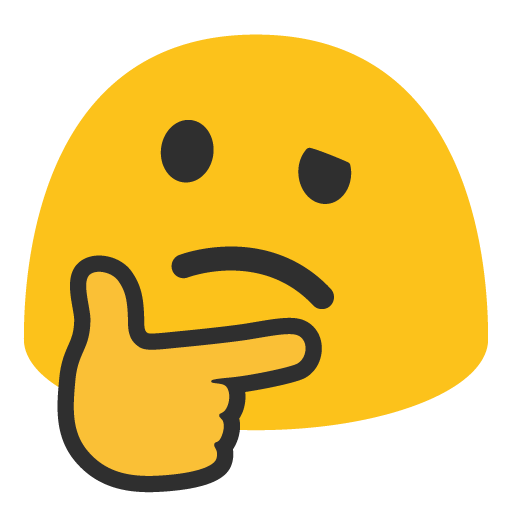

That page doesn't exist
The link might be old, or the address has a typo. Head back to the lessons and pick up where you left off.

The link might be old, or the address has a typo. Head back to the lessons and pick up where you left off.
